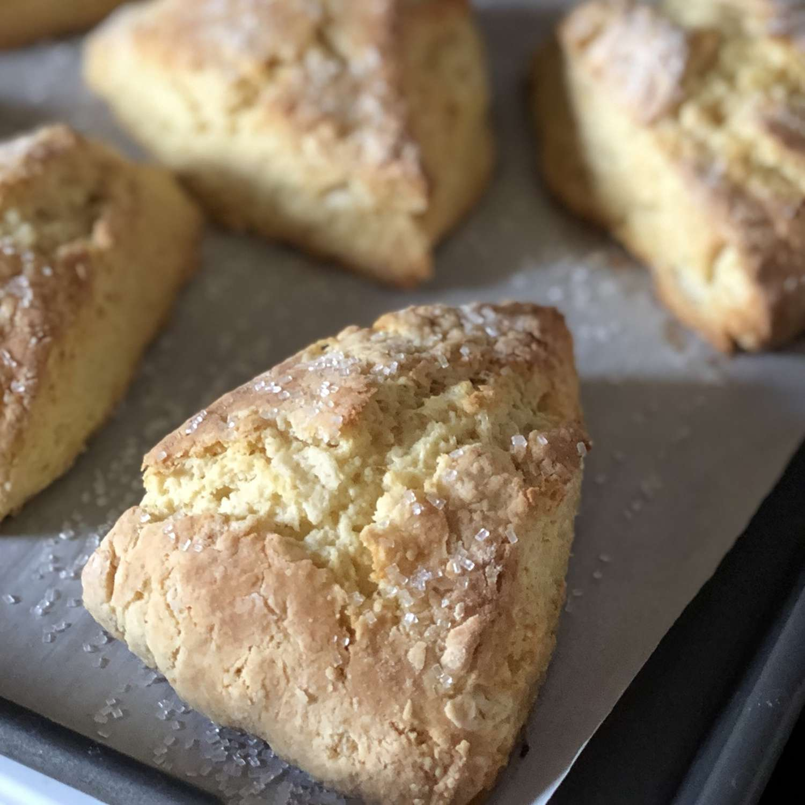

Homemade Scones Recipe

These scones pair great with coffee or tea, take your pick
Makes 8 scones
Nothing is quite the same as some homemade scones, top them with coated cream and
strawberry jam. Pair them with a lovely cup of tea with milk and surger and enjoy a snack that would
make anyone from England proud.
Ingredients
- 3 cups all-purpose flour, plus more for dusting
- 1/2 cup white sugar
- 5 tsp baking powder
- 1/2 tsp salt
- 3/4 cup butter, cold
- 1 cup milk
- 1 egg, beaten
- Pre-heat oven to 400 degree F and lightly grease a baking sheet
- Combine flour, sugar, baking power, and salt into a large bowl; cut in butter
with 2 knives or a pastry blender until mixture resembles coarse crumbs.
- TIP: freeze the butter for 10 minutes and then using a box grater, grate the butter into
the flour mixture. Use two forks to cut the butter into the flour mix.
- Whisk milk and egg in a small bowl, then gradually stir into flour mixture until moistened.
- Turn dough out onto a lightly floured surface and knead briefly, 5 or 6 turns.
- Pat or roll dough out into a 1/2-inch thick round. Cut into 8 wedge-shaped pieces and place onto the prepared baking sheet.
- Bake scones in the oven for about 15 minutes or until golden brown on top.
This recipe is taken from Allrecipes Scones with some cooking tips by me.